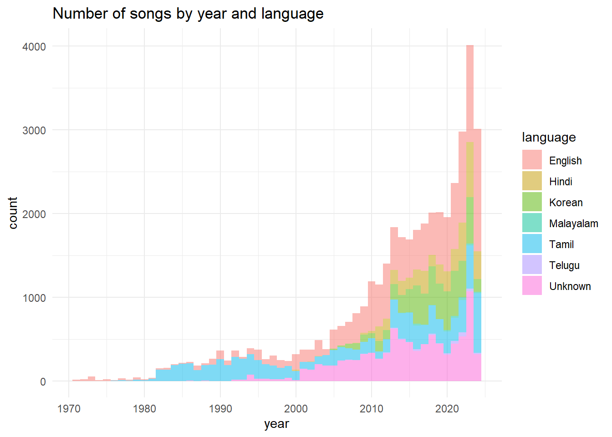
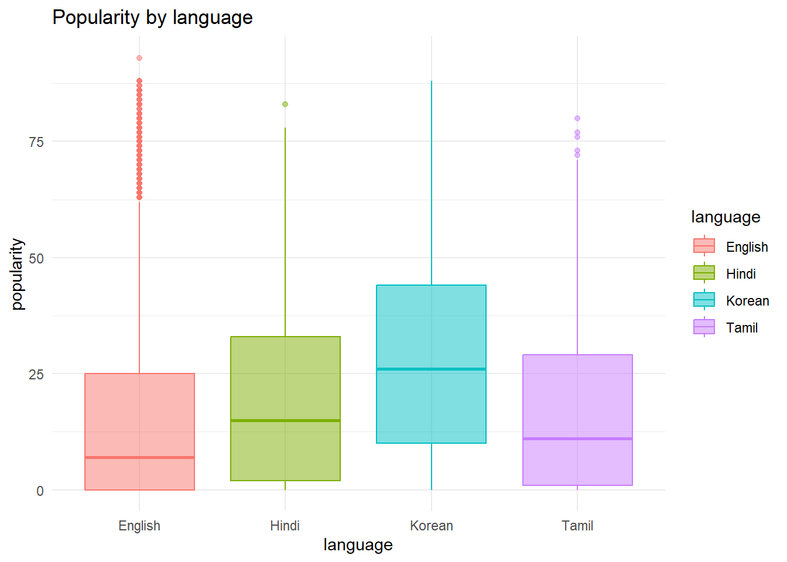
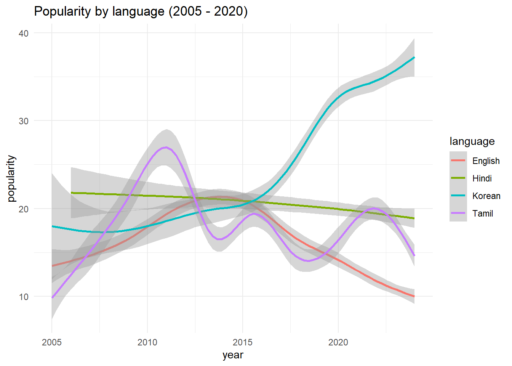
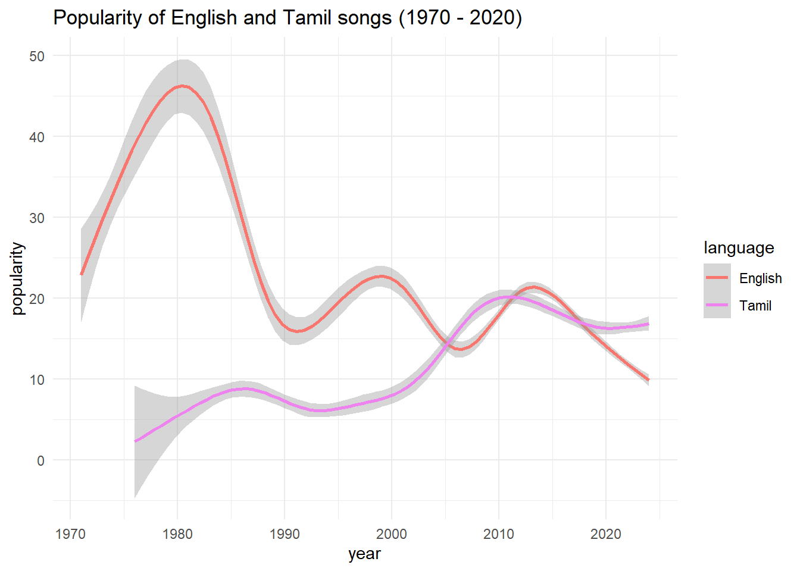
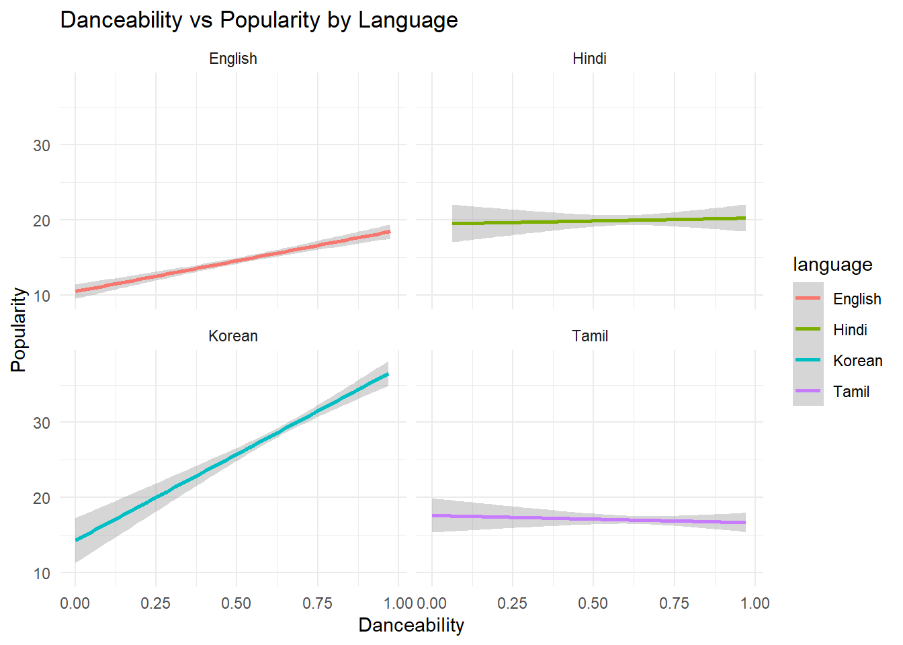
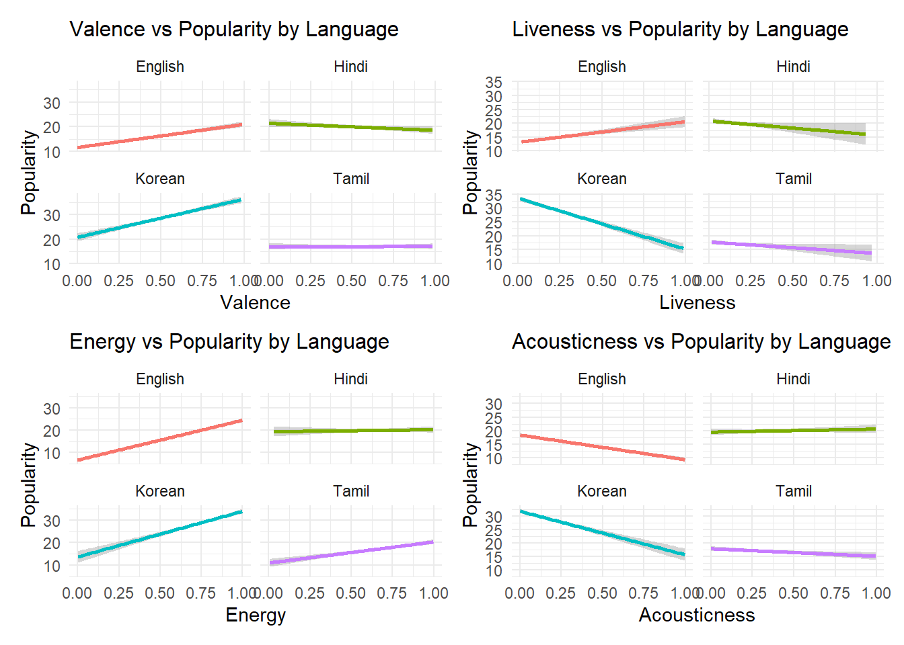

What Makes a Song Popular on Spotify? A Data-Driven Investigation
With 640 million users and over 100 million tracks, Spotify is not just a music streaming platform—it’s a cultural force shaping global listening habits.1 Every year, millions of users eagerly await their Spotify Wrapped, sometimes discovering that their favorite genre is something as niche as “Pumpkin Spice Latte.” But beyond quirky labels, what actually makes a song popular on Spotify?
Analyzing a dataset of 41,521 songs spanning multiple languages and decades, we uncover the factors that drive Spotify success—from the influence of language to the power of danceability.
Initial look at the Spotify Dataset
This dataset contains more than 41521 songs Tamil, Telugu, English, Hindi, Malayalam, and Korean languages. The majority of songs are in English, Tamil comes in second, but in recent years Hindi is gaining popularity. This dataset contains results from 1971 to 2024 with noticeable increase in songs number after 2013 - the same year in which Spotify launched a new platform “Spotify for Artists” 2 . By democratizing music distribution, Spotify has empowered independent artists, enabling them to reach global audiences without traditional record label backing.
Songs by language:
| language | songs in dataset | oldest song |
|---|---|---|
| English | 13886 | 1971 |
| Tamil | 9432 | 1976 |
| Unknown | 9089 | 1986 |
| Korean | 5073 | 2005 |
| Hindi | 3630 | 2000 |
| Telugu | 239 | 2007 |
| Malayalam | 172 | 2004 |
While English still dominates, Hindi and Korean tracks are gaining ground, reflecting the rise of Bollywood and K-Pop as global forces. Notably, Tamil music—which has a strong regional base in India—outnumbers Hindi in this dataset.
However, Malayalam and Telugu songs remain underrepresented (less than 300 records), so for deeper analysis, we focus on English, Hindi, Korean, and Tamil.
What Makes a Song Popular?
The popularity of a track is a value between 0 and 100, with 100 being the most popular. The popularity is calculated by algorithm and is based, in the most part, on the total number of plays the track has had and how recent those plays are.
Generally speaking, songs that are being played a lot now will have a higher popularity than songs that were played a lot in the past 3.
Spotify assigns each track a popularity score from 0 to 100, based on play counts and recent engagement. But what drives that score?
Does Language Matter?

Korean music has the highest average popularity 27.7232407, outpacing even English 16.2348408. While some English tracks achieve viral success, the data suggests that K-Pop’s rise is more consistent, likely fueled by global fandoms and synchronized marketing campaigns.
Hindi and Tamil are somewhat in the middle, without many outliers.
Do Newer Songs Get More Streams?
Let’s see if the newest songs tend to be more popular.

Korean songs seem to be gaining popularity the fastest, with noticeable speedup around 2015. After the 2005, Korean language started to quickly gain popularity and it is still on the rise. W can see that on the popularity vs year plot - the popularity is quickly rising. This trend aligns with K-Pop’s mainstream breakthrough in 2012, when Gangnam Style became the first YouTube video to hit 1 billion views. Since then, K-Pop’s global influence has only grown.4
For English and Tamil, our dataset contains tracks from 1070s (separate plot for clarity).

The oldest English and Tamil songs are from the ’70s. English music peaked in the 1980s, possibly due to MTV & the Second British Invasion (The Police, Duran Duran), when British songs (mostly Pop and Synth Pop) gained enormous popularity in the USA.5
Tamil language, spoken in the South of India, started gaining popularity after 2000s. In the India, CDs never gained a significant popularity and the music industry transformed from casettes to streaming around that time 6 .
Popularity and Danceablility
Spotify assigns each track a danceability score (0 to 1), measuring how well it suits rhythmic movement.

English and Korean tracks with high danceability consistently score higher in popularity. This aligns with K-Pop’s emphasis on choreographed performances—an essential part of the genre’s appeal. K-Pop’s structured choreography and viral dance challenges (such as those seen on TikTok) likely contribute to this trend. K-Pop dance is a collective term for the activities involved in crafting choreography that harmonizes with the spirit of K-pop music. K-pop has gained global acclaim, with its music videos often featuring intricate and synchronized dance routines that elevate the overall artistic experience.7
The trend is weaker for Hindi and Tamil songs, where higher danceability score don’t necessarily equate to higher popularity
Other Factors: Energy, Mood (Valence), & Acoustic Elements

Korean and English: Higher energy and valence (happier, more upbeat) songs tend to be more popular. Interestingly, live-sounding recordings boost popularity for English songs but slightly hurt Korean tracks, possibly due to the high production value expected in K-Pop. Acoustic songs struggle to gain high popularity across both languages.
Hindi and Tamil: Valence and Acousticness seem to have no impact on popularity. Live songs tend to be slightly less popular in both languages.Tamil songs benefit from having higher energy, but the effect on Hindi tracks is neglectable. Considering all this, we can suspect that other cultural factor play a role.
Bollywood influence
The relationship between Bollywood’s music industry and its film studios creates a self-reinforcing ecosystem. As Nirmika Singh, Executive Editor at Rolling Stone India, explains, major distributors like T-Series and Zee not only handle music distribution but also produce their own films and sign artists to exclusive contracts. These artists are then promoted as playback singers in the films, effectively allowing the labels to control both production and distribution, creating a near-monopoly in the industry. 8
Key Takeaways: How to Make a Hit on Spotify
- Language matters: K-Pop and Bollywood are rising global forces, challenging English-language dominance.
- Make it danceable (if possible): For English and Korean tracks, a strong rhythm and choreography boost success.
- High-energy, happy songs win — at least in English and Korean tracks
Final Thoughts: The Future of Streaming
As streaming platforms evolve, Spotify isn’t just reflecting musical trends—it’s actively shaping them. Algorithms influence what listeners discover, amplifying certain genres and artists while reinforcing existing preferences.
Research by Pablo Bello and David Garcia (2021) suggests that Spotify has increased global diversity in music consumption, allowing more cross-border discovery. However, at the same time, music within culturally related markets is becoming more homogenous. Countries that already shared musical tastes are growing even more similar, while the gap between different cultural clusters is widening.
In other words, countries that were already close to one another in taste are becoming more similar but increasingly different from other clusters of countries. Such clusters appear strongly determined, but not only, by geographical and cultural distance.9
Yet, streaming algorithms aren’t the only force driving musical evolution. As seen with K-Pop and Bollywood, industries with strong identities and global marketing strategies can break through algorithmic patterns, reaching audiences far beyond their home markets.
As the music industry moves forward, the balance between algorithm-driven discovery and culturally distinct musical movements will define the next generation of global hits.
Footnotes
https://wayback.archive-it.org/all/20141103193456/http://www.spotifyartists.com/spotify-explained/↩︎
https://developer.spotify.com/documentation/web-api/reference/get-an-artists-top-tracks/↩︎
https://www.guinnessworldrecords.com/world-records/107048-first-video-to-receive-one-billion-views↩︎
https://www.forbes.com/sites/cheriehu/2017/09/23/how-india-the-global-music-industrys-sleeping-giant-is-finally-waking-up/↩︎
https://www.kpopinlondonmin.com/post/what-is-kpop-dance-and-its-characteristics-unveiling-the-artistry-of-k-pop-dance↩︎
https://www.forbes.com/sites/cheriehu/2017/09/23/how-india-the-global-music-industrys-sleeping-giant-is-finally-waking-up/↩︎
Bello, P., Garcia, D. Cultural Divergence in popular music: the increasing diversity of music consumption on Spotify across countries. Humanit Soc Sci Commun 8, 182 (2021). https://doi.org/10.1057/s41599-021-00855-1↩︎